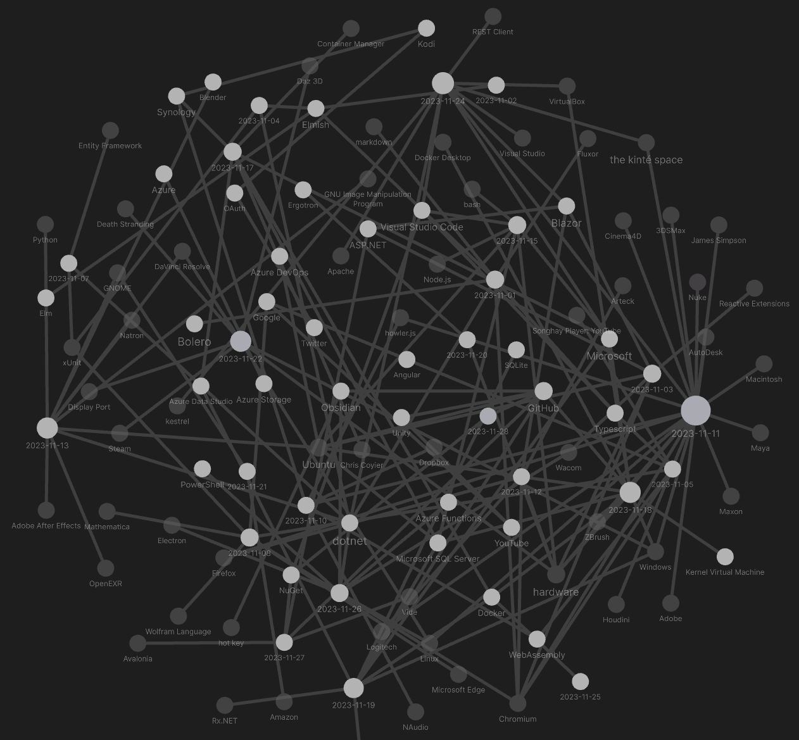

studio status report: 2023-11
month 11 of 2023 was about releasing Songhay.Player.ProgressiveAudio and returning to SQL Server
Songhay.Player.ProgressiveAudio is released and running on kintespace.com. This release was only ‘half’ of what is needed to completely replace http://kintespace.com/player.html. The other ‘half’ includes:
Songhay.Modulesrelease 6.4.0 📦🚀 [GitHub]Songhay.Modules.Bolerorelease 6.4.0 📦🚀 [GitHub]Songhay.Player.YouTuberelease 6.3.0 📦🚀 [GitHub]
The entire stack under Songhay.Player.YouTube has be touched to capture the release of F# 8.
To service the day job (and my personal study), I am pleased to see the return of Microsoft SQL Server to my Studio. The following Jupyter notebooks were published because of this great change:
In addition to the notes above are the usual Obsidian notes. The Obsidian visualization for month 11 is:

Selected notes:
[[Bolero]]: “Advanced Blazor State Management Using Fluxor”
I think that an article like “Advanced Blazor State Management Using Fluxor” will verify that the [[Elmish]] piece of [[Bolero]] eliminates the need for something like [[Fluxor]] [🔗 GitHub ].

Fluxor + C#9 - Redux Pattern in Blazor WebAssembly
[[dotnet|.NET]] Interactive repo docs have been improved!
I notice these docs are in [[markdown]] format:
https://github.com/dotnet/interactive/tree/main/docs
Highlights:
- at the beginning of this year a FAQ doc was added 🏁
- 🤓 “.NET interactive kernel already supports connecting to any Jupyter kernel as a sub kernel.” [📖 docs ]
- the
dotnet interactiveCLI [📖 docs ] - 🤓 “You can create extensions for .NET Interactive in order to create custom experiences including custom visualizations, new magic commands, new subkernels supporting additional languages, and more.” #to-do [📖 docs ]
- The
#!importmagic command [📖 docs ] was always there but I did not really know what ti did. - To share values between JavaScript cells, “Declare your JavaScript variables without using a keyword such as
let,const, orvar…” 🤓 [📖 docs ] - To display JavaScript-cell data, the
returnkeyword has be used 😐 [📖 docs ] 🤓 - along with
requirethere isimportfor ES5 modules [📖 docs ] - “.NET Interactive Architectural Overview” is definitely new
- a clear explanation of
#!set[📖 docs ] - an even clearer explanation of
#!connect(and no suggestion that connection strings can be obfuscated 😐) [📖 docs ] 🤓
Microsoft.AspNetCore.Mvc.Testing 📦 #day-job
My main purpose for using Microsoft.AspNetCore.Mvc.Testing [🔗 NuGet ] is to get the [[ASP.NET]] “service provider” that will go to production instead of rolling some stuff 💩 together for testing only.
I need to remember the importance of setting up IServiceScope [📖 docs ] before trying to get a service:
using var scope = _factory.Services.CreateScope();
IMyRepo? repo = scope.ServiceProvider.GetRequiredService<IMyRepo>();
The strongly-typed GetRequiredService<TDep>() method will be impossible to find and call without setting up a scope.
more #day-job disappointment from [[xUnit]] 😐 #make-blog-post
The “philosophy” of [[xUnit]] is based on you using the default features of [[dotnet|.NET]] instead of leveraging some kind feature-rich custom API. This “philosophy” slapped me in the face again when I discovered that my ordered tests were not stopping when one of them fails.
An [[xUnit]] issue from 2016, “Should be able to Cancel ordered tests collection run on first fail #856,” was closed by a bot 🤖 based on its age 😐
I reached back into my WPF experience to expect some kind of AppDomain-level exception watcher and it turns out there has been one since [[dotnet|.NET]] Core 2.x, AppDomain.FirstChanceException:
Occurs when an exception is thrown in managed code, before the runtime searches the call stack for an exception handler in the application domain.
…This event is only a notification. Handling this event does not handle the exception or affect subsequent exception handling in any way.
The AppDomain event I used in my WPF days was AppDomain.UnhandledException [📖 docs ] which is needed to hide errors from users. With FirstChanceException there is no risk of hiding/swallowing or not seeing exceptions which is great for automated tests.
FirstChanceException can be used in a test base class to set a static protected logic-gate field to signal to the sub-class that an exception has occurred. This field can be checked before a test method runs with Assert—and this check has to be called explicitly in every test method because remember [[xUnit]] disappoints by design.
what about the BeforeAfterTestAttribute❓
The BeforeAfterTestAttribute [🔗 GitHub ] passes no information about test runs. It only passes reflection data about the adorned method 😐 There is a StackOverflow question from over five years ago asking for this functionality and getting no answers.
related reading
- https://github.com/xunit/samples.xunit
- “xUnit BeforeAfterTestAttribute: How to Run Code Before And After Test”
- “xUnit: Control the Test Execution Order”
[[howler.js]]: the [[James Simpson]] presentation makes it clear…
…actually the audio element (what James calls “HTML5 audio”) is needed for streaming audio. He warns that the Web Audio API needs to load the entire file before playing which is great for high-performance “sound sprites” (for the games he is making) but not so great for CD-quality music:

Web Audio Made Easy with Howler JS - James Simpson: ThunderPlains 2019
[!important] There is no need to experiment with [[howler.js]] as long as the there is no streaming support for the Web Audio API.
[[OpenEXR]] is the compositing file format
What I thought was cool (since the turn of the century 👴) was working hard on a Photoshop composition with layers—and then opening that *.psd file up in [[Adobe After Effects]] to animate it.
The real world of compositing has moved on to a workflow where, say, [[Blender]] renders a scene to ILM’s [[OpenEXR]] format [🔗 Wikipedia ]. Here is a tutorial featuring EXR and [[DaVinci Resolve]]:

Tutorial: Real-time EXR Workflow | DaVinci Resolve + Blender
This EXR ‘tutorial’ juxtaposes [[Natron]] (the open source subset of Nuke) and [[Blender]]:

Why Blender Users Need To Learn Natron!! - Compositing relighting Tutorial
OpenEXR provides the specification and reference implementation of the EXR file format, the professional-grade image storage format of the motion picture industry.
The purpose of EXR format is to accurately and efficiently represent high-dynamic-range scene-linear image data and associated metadata, with strong support for multi-part, multi-channel use cases.
I am still ignorant enough to think that EXR is a highly technical replacement of the *.psd file. When this ignorance is actually reality then [[GNU Image Manipulation Program]] would save/export to this format:
High bit depth support allows processing images with up to 32-bit per color channel precision and open/export PSD, TIFF, PNG, EXR, and RGBE files in their native fidelity. Additionally, FITS images can be opened with up to 64-bit per channel precision.
—https://docs.gimp.org/en/gimp-introduction-history-2-10.html
There is a plugin [🔗 GitHub ] for [[GNU Image Manipulation Program]] that can import *.exr files. This situation is similar in the world of Photoshop. The world of [[Python]] data science has Imageio:
Website: https://imageio.readthedocs.io/
Imageio is a Python library that provides an easy interface to read and write a wide range of image data, including animated images, video, volumetric data, and scientific formats.
sketching out development projects
The current, unfinished public projects on GitHub:
- replace the Angular app in
http://kintespace.com/player.htmlwith a Bolero app 🚜🔥 - finish the “
SonghayCore📦✨ release 6.0.5” project - start the “
Songhay.Publications.Models6.0.0” 📦🚀 project
The proposed project items:
- add kinté space presentations support to
Songhay.Player.YouTube🔨 🚜✨ - generate Publication indices from SQLite for
Songhay.Publications.KinteSpace - generate a new repo with proposed name,
Songhay.Modules.Bolero.Index✨🚧 and add a GitHub Project - switch Studio from Material Design to Bulma 💄 ➡️ 💄✨